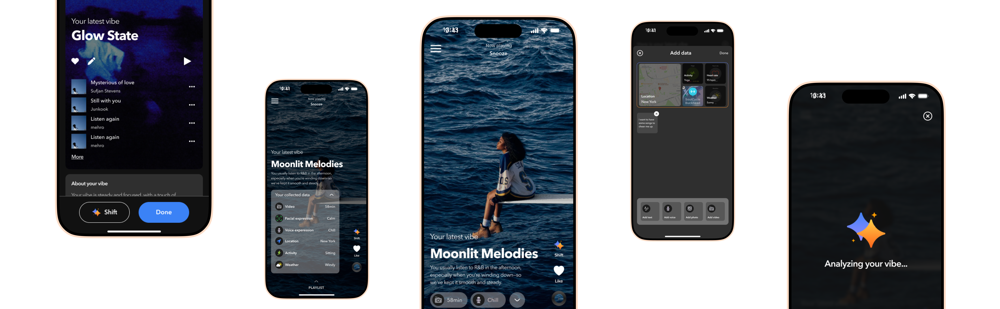

Sep 2024 – Apr 2025
AI + Music / Mobile App / Thesis Project
Music is everywhere in our lives. It shapes our moods, carries us through commutes, and turns ordinary moments into something more. Streaming made all of it effortless — 616 million people now use it daily, and it accounts for 84% of the entire music industry's revenue. But the core experience? It's barely evolved. With AI advancing rapidly, I wanted to explore: what could music streaming actually become — and do people even want it to change?
Subscriber growth has dropped from 29% to just 6%. The old playbook — low prices, every song in the world, same experience for everyone — is running out of steam. Companies are raising prices and pushing toward premium tiers, but the real question remains: what kind of experience would actually make people want to upgrade? That became my design challenge.
Before designing anything, I needed to answer two simple questions: do people actually feel something is missing in how they listen to music? And if so, would they be open to AI being part of the solution — or would it feel intrusive? So I talked to real listeners about their habits, what they love about current platforms, and what they imagine music could feel like in the future.
Through user research, two things became clear. First, people are open to AI in their music experience — but only if it's subtle, useful, and emotionally resonant, not flashy for the sake of being futuristic. Second, music choices are deeply contextual: time, location, activity, and emotional state all shape what someone wants to hear. People don't stay loyal to artists or genres — they stay loyal to the vibe that fits their moment.
[Design process body text — to be filled]
VibeSync is a mobile app that explores how AI can meaningfully participate in people's music listening experience — analyzing your vibe through context like facial expression, location, activity, and weather to curate the perfect soundtrack for your moment.

[Feature 1 description — to be filled]
[Feature 2 description — to be filled]
[Feature 3 description — to be filled]
[Reflection body text — to be filled]